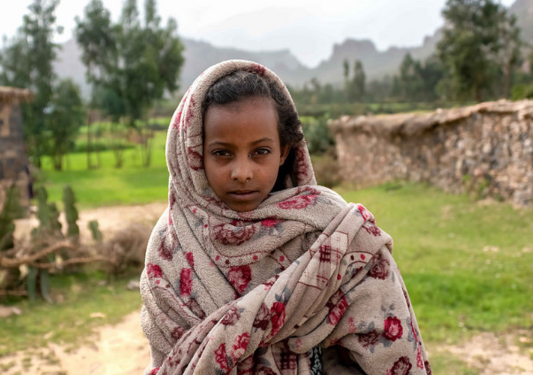
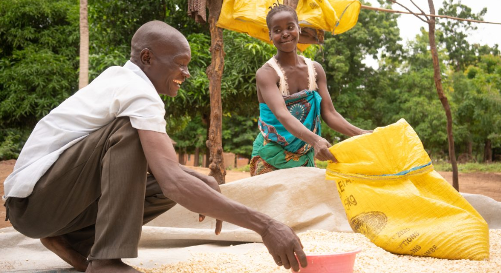

What Are We Aiming?
Aiming to help alleviate poverty is not only a moral imperative but also a crucial step toward building more equitable and sustainable societies. Poverty, often caused by a combination of factors such as economic inequality, lack of access to education, and limited job opportunities, traps individuals and communities in a cycle of hardship. Addressing poverty requires a multifaceted approach that tackles both immediate needs and the root causes of economic disparity. One of the first steps in combating poverty is ensuring access to basic necessities such as food, clean water, and healthcare. Programs aimed at providing emergency relief can make an immediate difference in the lives of those in need. However, long-term solutions focus on empowerment, such as investing in education and vocational training, which provide individuals with the skills and opportunities to break free from the poverty cycle.
In addition to government intervention, partnerships with non-profit organizations, businesses, and communities can amplify efforts to support economic development. Sustainable practices, such as microfinance and community-based initiatives, help people create self-sufficient livelihoods, reducing reliance on aid. Ultimately, addressing poverty requires both compassion and action. By targeting systemic inequalities and fostering opportunities for growth and inclusion, we can build a future where poverty is not a barrier to human potential.
Learn More
Why Save Money? Why Help? Where Can We Start?
Check These Websites Out Too!
 Made By: Penny Power Kids and Group 3-Sodium